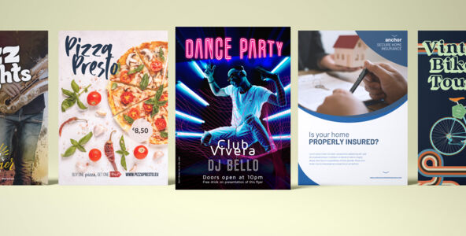

Flyers
Wat zijn Flyers?
Definitie
Flyers zijn enkelbladige documenten die worden gebruikt voor promotie- of marketingdoeleinden. Ze worden vaak in bulk verspreid om informatie, aanbiedingen, evenementen of bedrijven onder de aandacht te brengen.
Voordelen van Flyers
- Kosteneffectief: Flyers zijn relatief goedkoop om te produceren en kunnen snel in grote aantallen worden verspreid.
- Breed Bereik: Geschikt voor massadistributie, waardoor ze een groot publiek kunnen bereiken.
- Veelzijdig: Flyers kunnen voor verschillende doelen worden gebruikt, zoals promoties, aankondigingen en evenementen.
Toepassingen van Flyers
Flyers worden vaak gebruikt voor:
- Evenementpromotie: Aankondigen van concerten, beurzen, en andere evenementen.
- Bedrijfspromotie: Bekendheid geven aan een nieuw bedrijf of product.
- Speciale Aanbiedingen: Aankondigen van kortingen en promoties.
- Politieke Campagnes: Voor het verspreiden van politieke boodschappen en kandidaten.
Hoe Werkt het Ontwerpen van Flyers?
Het ontwerpen van een flyer begint met een duidelijke boodschap en een aantrekkelijk ontwerp. Flyers moeten visueel opvallend zijn, met een sterke oproep tot actie. Het gebruik van heldere kleuren, opvallende afbeeldingen, en bondige teksten is essentieel. Flyers worden meestal op dik papier gedrukt voor een stevig en professioneel gevoel, en kunnen worden afgewerkt met een glans- of matte coating.
Belangrijke Overwegingen bij het Ontwerpen van Flyers
- Doelgroep: Houd de doelgroep in gedachten bij het ontwerp en de boodschap van de flyer.
- Oproep tot Actie: Voeg een duidelijke oproep tot actie toe, zoals een telefoonnummer, website, of locatie.
- Papierkeuze: Kies de juiste papiersoort voor een duurzame en professionele uitstraling.